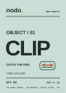
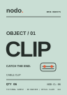

Repeat the invariant.
Label zones, item numbering, typography hierarchy and quantity placement remain stable as copy varies.
11 / SELF-DIRECTED PRODUCTION SPECIMEN · 2026
A commercial identity has to survive the details: variants, dimensions, changed copy and final files.
This complementary project develops the fictional NODO desktop-cable system into a structured print-production example: three label fronts, multiple publication formats, a revision trail and vendor questions that must be answered before a real press run.
A label family needs to remain legible when the content changes, not only when the mockup looks good.
The design problem is a common one in in-house marketing: adapt a single identity to a family of product variants while preserving exact specifications, quantities, identifiers and version status. A related ad, flyer and insert must have coherent brand behavior across sizes.
NODO and its products are fictional. The proof changes, specifications and approval questions are deliberately constructed teaching examples—not records of a real printer, legal reviewer, manufacturer or sale.
Unlike rendered packaging mockups, the flat SVG master files can be opened and inspected directly. Product shape, material, adhesive performance, barcode requirements and supplier dielines must be confirmed before commercial use.
A good system does not need three separate brand ideas.
All three flat label artworks share the same wordmark position, object numbering, heavy product typography, use description, quantity field and SKU field. Color differentiates the product variants; information layout stays predictable.
The files have a 96 × 136 mm extent including 3 mm sample bleed around a planned 90 × 130 mm trim. The dimensions are a provisional portfolio scenario, not supplier-issued dielines.
A magazine advertisement is not a stretched social post.
The original print campaign extends the brand's headline-led graphic language to an A5 advertisement, an A6 postcard, an A6 product-instruction insert and an A4 product sell sheet. The hierarchy shifts from emotional message to practical information as the communication purpose changes.
Where magazine advertising focuses on one recognizable gesture, the sell sheet gives variant and quantity information. The insert stays practical, with sequential instructions and simplified line illustrations.
Production work lives or dies on small discrepancies.
In this constructed revision scenario, the CLIP label begins with a vague product description and a quantity that does not match the product SKU. Revision 02 clarifies the object but leaves the mismatch. Revision 03 aligns the description and pack count: CLIP / 06. The older source artwork remains in a separate archive rather than being silently overwritten.
This is a deliberately simulated content QA exercise. No external company requested these revisions.

R01 / original concept / SVG ↗Issue: “CABLE HOLDER” lacks precision, and QTY 04 conflicts with the planned CL-06 SKU.

R02 / partial update / SVG ↗Issue: The description improves, but the label still has the outdated quantity.
Correction: Product description and QTY 06 now align with the sample SKU.
Exporting a PDF is only one part of preparing a real production file.
The master SVGs supply physical dimensions, source composition and provisional bleed. A separate technical report defines intended trim, safe-area assumptions, color conversion needs, asset ownership and questions requiring vendor validation. Current sources use editable vector shapes and text; final press settings remain supplier-dependent.
The project intentionally avoids a false retail approval. There is no real UPC, supplier-certified dieline, mandated regulatory text, verified stock, print proof or confirmed mailing campaign.
| Deliverable | Trim size | Source extent with 3 mm bleed | Remaining approval |
|---|---|---|---|
| Three label fronts | 90 × 130 mm | 96 × 136 mm | Substrate, die, label info, barcode and proof |
| A5 advertisement | 148 × 210 mm | 154 × 216 mm | Publication specifications and output intent |
| A6 postcard | 148 × 105 mm | 154 × 111 mm | Printer profile, sides, paper and imposition |
| A6 insert | 105 × 148 mm | 111 × 154 mm | Stock, pack compatibility and handling copy |
| A4 sell sheet | 210 × 297 mm | 216 × 303 mm | Sales claims, inventory values and distribution |
Current artwork is editable and dimensioned. It has not received vendor color conversion, a validated dieline, real printer approval, certified barcode or press check. A final commercial release needs proper PDF/X settings, print-profile preflight, measured type legibility and a physical proof. The optional sample PDFs in the source package are technical demonstrations, not printer authorization.
Technical confidence means knowing exactly what has—and has not—been validated.
The design system produces a consistent product family and multiple print formats, while the archived revisions demonstrate explicit content control. The limit is equally important: this project has not gone through a real vendor, physical print proof, regulatory review or actual inventory release.
Next practical steps are to request a supplier die and tolerances, verify all product details, test font reproduction and color at actual size, preflight a PDF against that specific printer's profile, and inspect an approved press proof.
Label zones, item numbering, typography hierarchy and quantity placement remain stable as copy varies.
Revision files remain inspectable, including intentionally wrong states, so changes are accountable.
Dimensions and vectors can be checked here. Vendor settings and physical print accuracy cannot be invented.